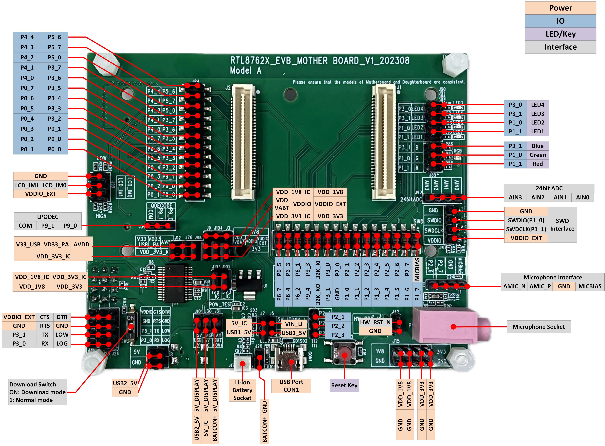
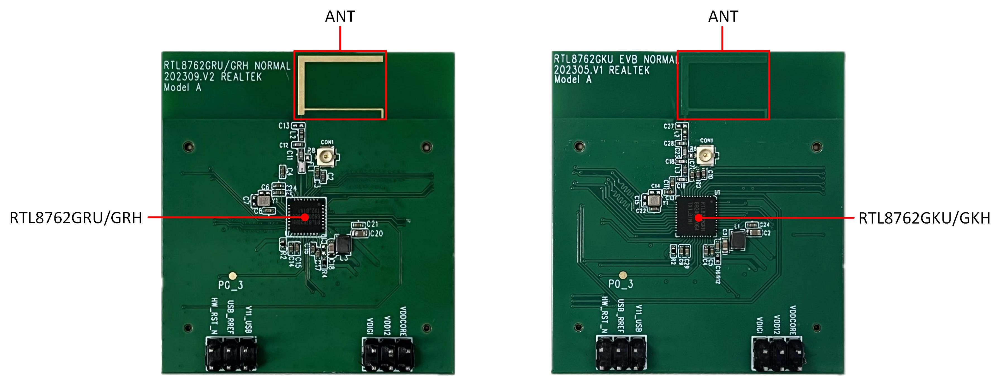
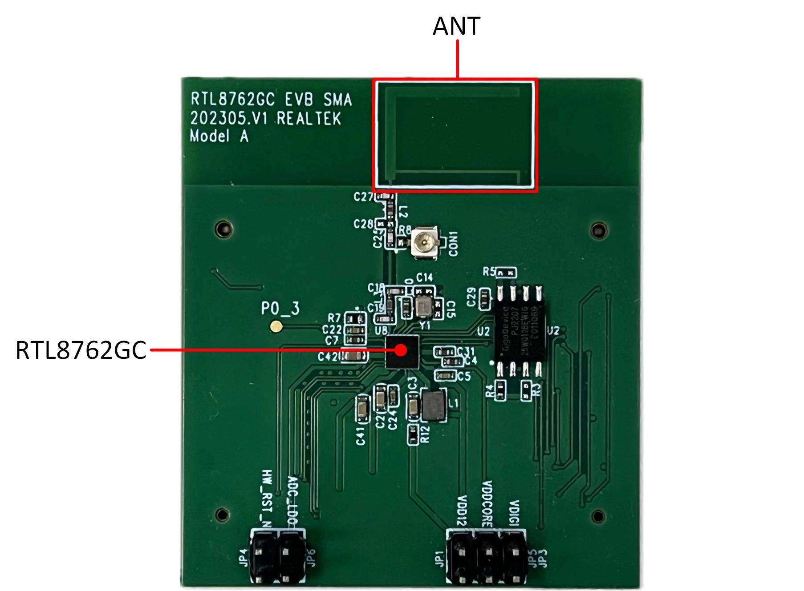
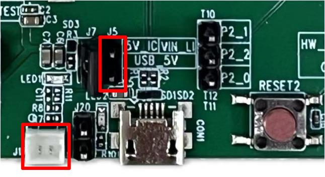
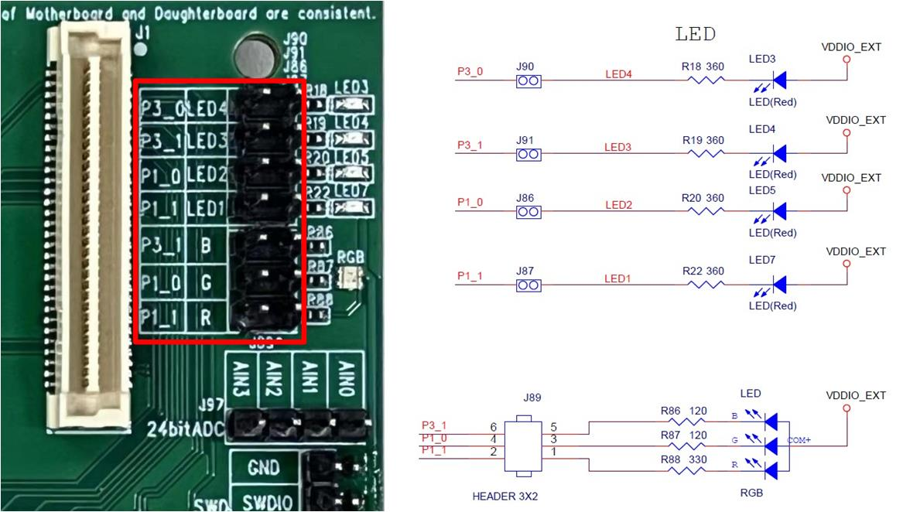
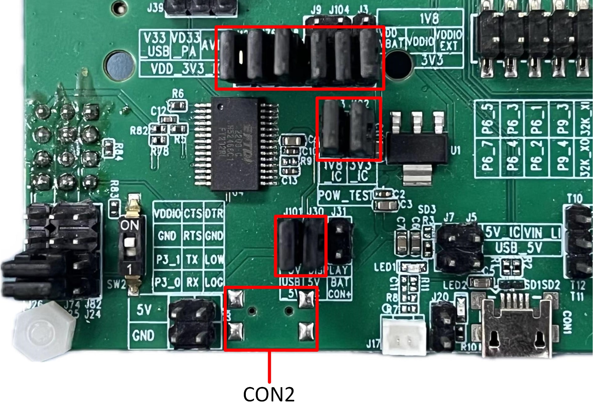
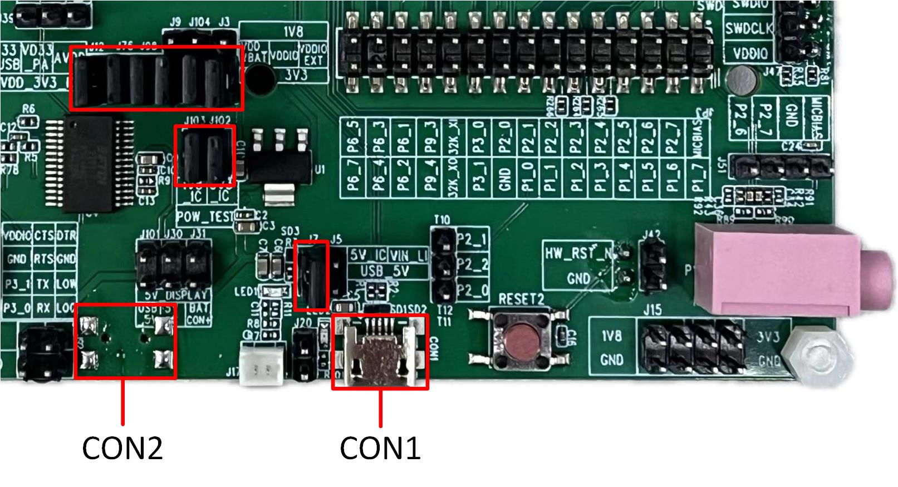
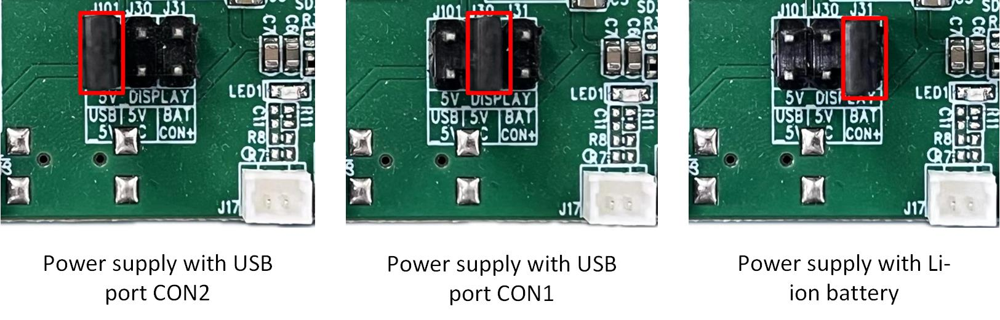

Model A 评估板
概述
RTL87x2G Model A 评估板适配的子板有：
RTL87x2G Model A 评估板上提供了用户开发的硬件环境，包括：
备注
如需购买 EVB，可访问 Realtek 官方网站，获取 导购指引。
区块分布
Model A 评估板 正面 和 背面 的 区块分布 如下。

Model A 评估板区块分布示意图-正面

Model A 评估板区块分布示意图-背面
以下按照逆时针的顺序依次介绍评估板上的区块。
区块 |
介绍 |
|---|---|
EVB 子板连接座（EVB Daughter Board Socket） |
用于连接 EVB 子板，具有防倒插机制 |
Model A 评估板仅支持 QSPI（Group1）显示接口 |
|
QDEC 接口（QDEC Interface） |
用于连接正交编码器 |
IC 供电电压选择（3.3V/1.8V 可选） |
|
IC 功耗测试接口（3.3V/1.8V 可选） |
|
支持下载模式和正常模式 |
|
支持 USB 端口 CON1、CON2 或电池对屏幕进行供电 |
|
用于连接单节锂离子电池的两针接口 |
|
用于评估板供电，并与 RTL87x2G USB 通信 |
|
复位按键（Reset Key） |
按下此按键会复位系统 |
外部供电（External Power Supply） |
为外设提供 1.8V 和 3.3V 供电 |
麦克风插座（Microphone Socket） |
支持 3.5mm 音频接口 |
麦克风接口（Microphone Interface） |
用于连接外部麦克风子板 |
SWD 接口（SWD Interface） |
用于 SWD 调试 |
24位 ADC 接口（24bits ADC Interface） |
24位 ADC 接口，AIN0-3 可作为四路单端输入，AIN0-1 和 AIN2-3 可作为两路差分输入 |
提供四个红色LED以及一个 RGB LED |
|
独立按键（Independent Keys） |
KEY2，KEY3，KEY4，KEY5 四个独立按键分别与 P0_1，P0_2，P0_6 和 P1_2 连接 |
用于评估板供电，并连接 USB 转 UART 芯片 FT232RL，用于下载程序或调试 |
|
显示接口（Display Socket） |
用于连接显示屏幕 |
接口分布
{kind=link}

Model A 评估板接口分布示意图-正面

Model A 评估板接口分布示意图-背面
区块和接口介绍
EVB 子板
EVB 子板可拆卸更换，子板连接座有防倒插机制。RTL87x2G Model A 评估板可适配的子板有 RTL8762GRU/GRH 子板，RTL8762GKU/GKH 子板和 RTL8762GC 子板。
{kind=link}

RTL8762GRU/GRH 和 RTL8762GKU/GKH 子板
{kind=link}

RTL8762GC 子板
电源
- USB 端口 CON1
USB 端口 CON1 用于 Model A 评估板供电，并与 RTL87x2G USB 通信。
- USB 端口 CON2
USB 端口 CON2 用于 Model A 评估板供电，并连接 USB 转 UART 芯片 FT232RL，用于下载程序或调试。

Model A 评估板 USB 端口 CON1 和 CON2
- 锂电池接口
Model A 评估板支持 锂电池供电，可通过跳线帽连接红框内的排针，通过 USB 对锂电池进行充电。
{kind=link}

Model A 评估板锂电池接口
- IC 供电电压选择
VDD_VBAT/VDDIO/VDDIO_EXT 可根据实际运用场景选择 1.8V 或者 3.3V 供电，默认接 3.3V。电源输入引脚介绍如下：
引脚名称 |
作用 |
|---|---|
V33_USB |
为 USB 传输供电 |
VD33_PA |
为内部 +14dBm 射频功率放大器供电 |
AVDD |
为内部 24 位 ADC 供电 |
VDD_VBAT |
为内部稳压器和模拟电路供电 |
VDDIO |
为 PAD 和 Flash 供电 |
VDDIO_EXT |
为外设供电 |

Model A 评估板供电电压选择
备注
VDDIO 和 VDDIO_EXT 电压需要保持一致。
如果 IC 没有 VDDIO 电源输入引脚，由 VDD_VBAT 为内部稳压器，模拟电路，PAD 和 Flash 供电。
使用 RTL8762GRU/GRH 子板时，VDD_VBAT 只能选择 3.3V 供电。
评估板接口
UART/LOG 测试接口
- 下载模式:
需将 SW1/SW2 拨码开关拨到 ON 档（LOG拉低），按下 reset 按键重启（或重新上电），进入下载模式。
- 正常模式:
需将 SW1/SW2 拨码开关拨到 1 档（LOG悬空），按下 reset 按键重启（或重新上电），开始运行程序，此时调试可使用 Log pin，请参考 正常模式接线。

Model A 评估板 UART/LOG 测试接口
- Red LED 和 RGB LED 模块
Red LED 和 RGB LED 模块 可通过跳线帽连接红框内的排针，然后可以使用默认的 GPIO 控制 LED 和 RGB。也可以用杜邦线连接红框右侧排针和任意 GPIO，控制 LED 和 RGB。
{kind=link}

Model A 评估板 Red LED 和 RGB LED 模块
评估板的引脚分配
请参照最新的 RTL87x2G_IOPin_Information文档。
评估板使用说明
评估板供电接线
Model A 评估板供电可单独使用 USB 端口 CON2 供电，此时 RTL87x2G 的 USB 通信功能无法使用，但可以正常烧录程序到 RTL87x2G。评估板供电接线见下图，红框标出的所有跳线帽需接上。
{kind=link}

Model A 评估板使用 USB 端口 CON2 供电接线示意图
若需使用 RTL87x2G 的 USB 通信功能，评估板上的 USB 端口 CON1 和 CON2 都需要连接，此时供电连线示意图如下，红框标出的所有跳线帽需接上。
{kind=link}

Model A 评估板使用 USB 端口 CON1 和 CON2 供电接线示意图
下载模式接线
P0_3（log）为下载模式选择管脚，P0_3 拉低后硬件复位或重新上电会进入下载模式。 通过跳线帽将 P3_0 连接到 RX，将 P3_1 连接到 TX。将拨码开关拨到 ON 档（P0_3 会被拉低）， 然后硬件复位或上电进入下载模式。程序下载完成后， 将正面和背面的 SW1/SW2 拨码开关拨回 1 档，使 P0_3 恢复悬空状态。 最后，硬件复位或重新上电，程序将正常运行。

Model A 评估板下载模式接线
正常模式接线
请确认 SW1/SW2 拨码开关均已拨到 1 档， 此时可将下图中红框的跳线帽接上，P0_3（log）接RX，P3_0 和 P3_1 分别与 RX 和 TX 断开。 通过 USB 端口 CON2，用 Debug Analyzer 调试。

Model A 评估板正常模式接线
显示接口
- 供电选择
支持 USB 端口 CON2、CON1 或锂电池对屏幕进行供电。
{kind=link}

Model A 评估板屏幕供电选择
- 显示接口类型选择
显示接口类型选择，请根据实际所选屏幕要求确定 LCD_IM[1:0] 的电平状态，具体请查阅所选屏幕驱动芯片数据手册。
PIN Name |
QSPI（Group1）接口定义 |
|---|---|
P0_4 |
TP_RST |
P2_3 |
TP_INT |
P2_4 |
TP_SCL |
P2_5 |
TP_SDA |
P3_5 |
LCD_BL_CTRL |
P4_3 |
QSPI_CS |
P3_4 |
QSPI_DCX |
P4_0 |
QSPI_CLK(PHY) |
P3_3 |
QSPI_SIO3 |
P3_2 |
QSPI_SIO2 |
P4_1 |
QSPI_SIO1 |
P4_2 |
QSPI_SIO0 |
P3_6 |
LCD_RESX |
P0_5 |
LCD_TE (VSYNC) |
IC功耗测试
Model A 评估板提供 1.8V 和 3.3V 电压的 IC 功耗测试接口。
当 IC 供电是 3.3V 时，量测时断开 J102，然后串进电流表，量测通过 J102 的电流。
当 IC 供电是 1.8V 时，量测时断开 J103，然后串进电流表，量测通过 J103 的电流。

IC 功耗量测点
备注
请根据 电源输入引脚介绍 和功耗测量场景正确连接跳线帽。
为避免额外的耗电，需要关闭 log 打印。
为避免调试设备的影响，请勿将 UART，SWD 和调试器连接。
当采用外部直流电源供电时，需拔掉 J102 和 J103 跳线帽，然后外灌至 VDD_3V3_IC 或 VDD_1V8_IC。
RF 测试
使用 RF Test Tool 进行 Bluetooth/Zigbee 等射频性能测试时，红框标的两个跳线帽需接上，然后将正面和背面的拨码开关拨回 1 档，使 P0_3 悬空，P3_0 连接到 RX，P3_1 连接到 TX。

RF 测试接线